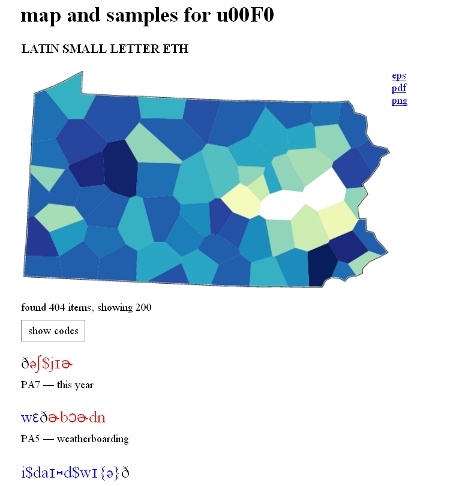

The character list shows all the characters used in the input data and the number of occurrences of each of the characters. By clicking on the number next to the character, a map is shown which displays the distribution of the symbol among the sites. The darker the color on the map, the more frequent the symbol (see whole color range). Below the map, samples are shown.
The character list can be a good way of detecting errors in the input data. For example, a very infrequent character might be a typo. Since clicking on the number shows samples below the distribution map, it can easily be inspected whether the character is a correct but infrequently used symbol, or, whether it is indeed an error.
Example of map and samples:
The list of samples shows strings in which the character is found (black - selected character, blue - part of string before the selected character, red - part of string after the selected character). The place and the linguistic variable in question are shown below the string, which makes it easy to find the character in the original data file.